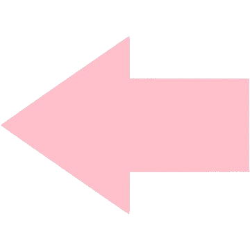

Biometriskā autentifikācija
Biometriskā autentifikācija ir droša identitātes pārbaudes metode, kas izmanto unikālus bioloģiskus datus
— piemēram, pirkstu nospiedumus, sejas atpazīšanu vai acs tīkleni — lai precīzi identificētu personu
un nodrošinātu piekļuvi ierīcēm, sistēmām
vai sensitīvai informācijai, tādējādi samazinot iespēju, ka nepiederošas personas varētu iegūt neatļautu piekļuvi.
Kādas ir priekšrocības?
-
Drošība – biometriskie dati ir unikāli katram cilvēkam, tāpēc tos ir daudz grūtāk viltot nekā paroli vai PIN kodu.
-
Ātrums un ērtums – lietotājam nav jāatceras sarežģītas paroles, jo autentifikācija notiek ātri, piemēram, ar pirksta nospiedumu vai sejas skenēšanu.
-
Grūtāk kopēt biometriskos datus – pirkstu nospiedumi, sejas struktūra vai acs tīklenes raksts ir unikāli un daudz sarežģītāk kopējami nekā tradicionālie piekļuves dati.
-
Mazāks paroļu zādzības risks – biometriskā autentifikācija samazina iespēju, ka kāds var nozagt vai uzminēt lietotāja paroli.
-
Plašs pielietojums – biometrisko autentifikāciju izmanto viedtālruņos, datoros, banku sistēmās un pat robežkontrolē, lai nodrošinātu drošu piekļuvi un identitātes pārbaudi.
Kādi ir trūkumi?
-
Privātuma riski – biometriskie dati tiek glabāti digitāli, un, ja tie nonāk nepareizās rokās, pastāv risks, ka tie tiks ļaunprātīgi izmantoti.
-
Kļūdas atpazīšanā – dažkārt autentifikācija var neveikties, piemēram, ja pirksts ir netīrs, seja nav skaidri redzama vai acs tīklenes skenēšana nesanāk precīzi.
-
Atkarība no tehnoloģijas – ja ierīce vai skeneris nefunkcionē, lietotājs nevar piekļūt saviem datiem vai sistēmai, kas var radīt problēmas.
-
Augstas izmaksas – biometrijas sistēmas un uzturēšana bieži ir dārgas, salīdzinot ar tradicionālajām paroļu sistēmām.
-
Nav iespējams mainīt biometriskos datus – ja dati tiek nozagti, tos nevar vienkārši nomainīt kā paroli, jo pirkstu nospiedums vai sejas struktūra ir nemainīga.
Izmantotie avoti:
tookitaki.com,
miniorange.com
